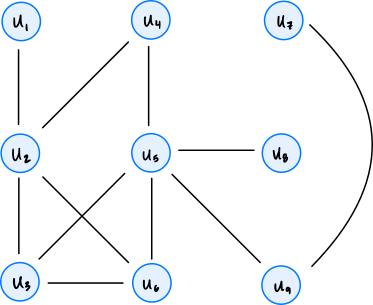
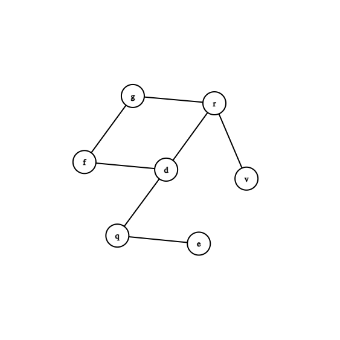
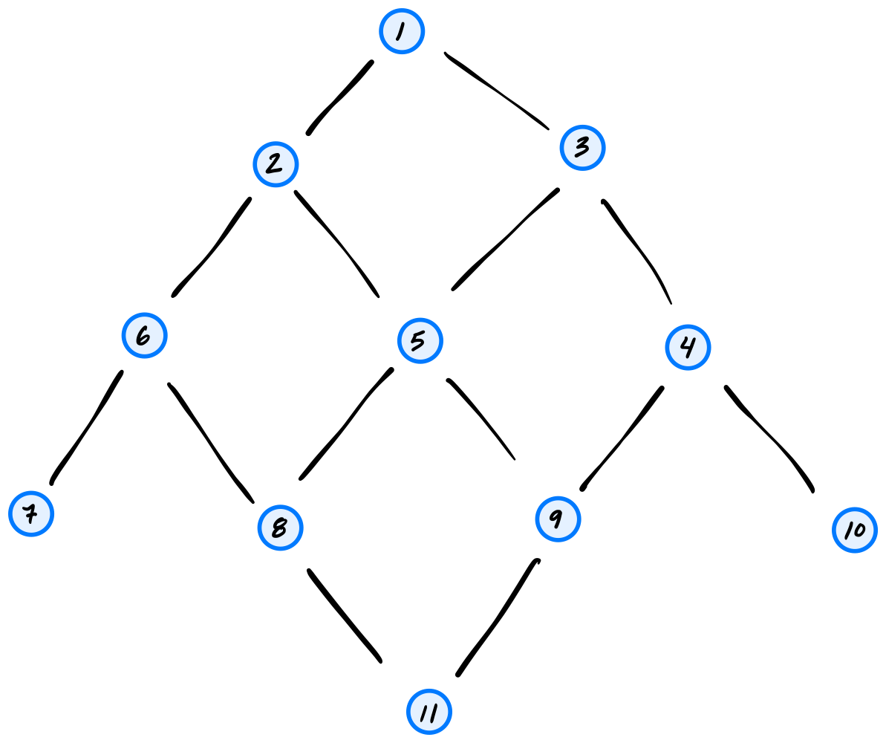
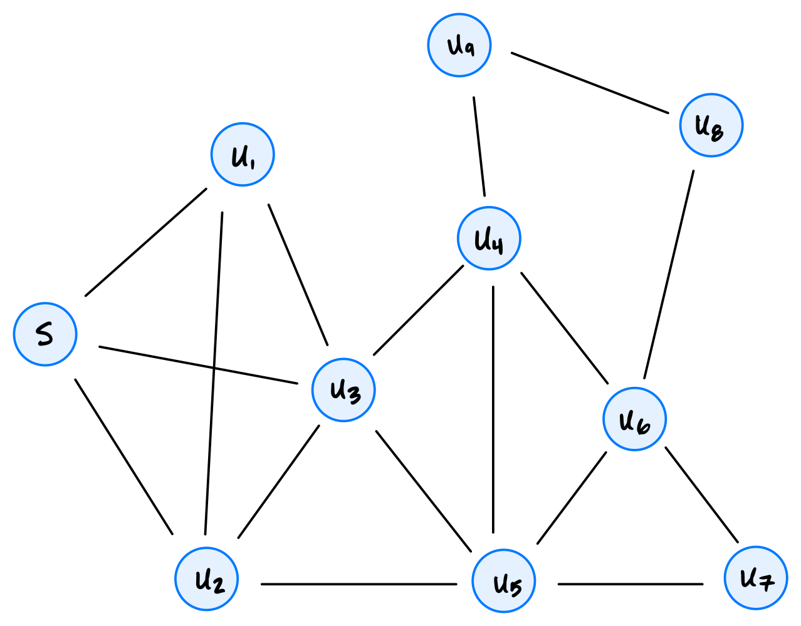

Problems tagged with "start and finish times"
Problem #272
Tags: depth first search, start and finish times
Suppose a depth first search is run on the graph shown below using node \(u_4\) as the source, and adopt the convention that graph.neighbors produces nodes in ascending order of label. Which node will have the smallest finish time?

Solution
\(u_1\)
Problem #273
Tags: depth first search, start and finish times
Suppose a depth first search is run on the graph shown below using node \(u_4\) as the source, and adopt the convention that graph.neighbors produces nodes in ascending order of label. What will be the start time of node \(u_7\)?

Solution
12
Problem #275
Tags: depth first search, start and finish times
Suppose a depth first search is run on the graph below in order to find start and finish times using node \(d\) as the source.

Adopt the convention that the first start time is 1, and, as always, that neighbors are produced in ascending order by label. What will be the start and finish times of node \(r\)?
Solution
Start time 4, finish time 7. DFS starts \(d\) at 1, \(f\) at 2, \(g\) at 3, and \(r\) at 4. From \(r\) it starts \(v\) at 5, which finishes at 6, and then \(r\) finishes at 7.
Problem #277
Tags: depth first search, start and finish times
Suppose a DFS is run on the graph shown below using node 11 as the source. Use the convention that a node's neighbors are produced in ascending order by label.

Part 1)
What will be the start time of node 2? Use the convention that the start time of the source is 1.
Solution
4
Part 2)
What will be the finish time of node 10?
Solution
11
Problem #280
Tags: depth first search, start and finish times
Suppose a depth-first search (DFS) is run on the graph shown below using node \(s\) as the source and adopting the convention that a node's neighbors are produced in ascending order of their label.

Part 1)
What will be the start time of node \(u_7\)?
Solution
8
Part 2)
What will be the finish time of node \(u_7\)?
Solution
9
Part 3)
Which node will be the DFS predecessor of node \(u_7\)?
Solution
\(u_6\)
Problem #285
Tags: depth first search, start and finish times
Suppose you run DFS on a graph in which all nodes are reachable from the source node. True or false: the source node will be marked as visited last, only if the graph is undirected.
Solution
False. The source is marked as visited last in both directed and undirected graphs. Every other node is reachable from the source, so each is discovered and finished during the recursive calls made by the call on the source, which finishes only after all of them have.
Problem #289
Tags: depth first search, start and finish times
Suppose a depth first search (DFS) is run on a connected undirected graph, and there is a node \(u\) which has only one neighbor. True or False: the finish time of node \(u\) will be equal to its start time plus 3.
Solution
False. If \(u\) is not the source, its only neighbor is the node it was discovered from, which is already pending. So DFS finds nothing new to visit from \(u\), and \(u\)'s finish time is its start time plus 1. (If \(u\) is the source, its finish time is its start time plus \(2(|V| - 1) + 1\), which equals its start time plus 3 only when the graph has exactly two nodes.)
Problem #290
Tags: depth first search, start and finish times
In a DFS on an undirected graph \(G\), the start time of node \(u\) is 12, while the finish time of node \(u\) is 37. How many nodes were marked pending between the moment that node \(u\) was marked pending and the moment that it was marked visited? Node \(u\) itself should be excluded from your count.
Solution
12
Problem #291
Tags: depth first search, start and finish times
Suppose \(T = (V, E)\) is a connected, undirected graph with no cycles (that is, \(T\) is a tree). Suppose a depth first search is run on \(T\) using node s as the source. Assume that node s has two neighbors: \(u\) and \(v\). If \(|V| = 15\), which one of the below represents possible start and finish times of \(u\) and \(v\)? You may assume that graph.neighbors produces neighbors in ascending order of label.
Solution
start[u] = 2, finish[u] = 21, start[v] = 22, finish[v] = 29
Problem #292
Tags: start and finish times
Suppose an undirected graph has 50 nodes. A full DFS is run on the graph to compute start and finish times. Suppose that, for each node, the difference between the node's start and finish is printed, and the largest difference is found to be 15.
True or False: it is possible that the graph is connected.
Solution
False.
If the graph were connected, the first call to dfs would reach all 50 nodes, so the other 49 nodes would all start and finish between the source's start and finish times. The source's finish minus start would then be at least \(2 \cdot 49 + 1 = 99\), which is much more than 15.
Problem #293
Tags: depth first search, start and finish times
Let \(G\) be a graph, and suppose \(s\), \(u\), and \(v\) are three nodes in the graph.
Suppose a depth-first search (DFS) is run on \(G\) using node \(s\) as the source and adopting the convention that a node's neighbors are produced in ascending order by label. During this DFS, start and finish times are computed. Suppose it is found that:
Now suppose another DFS is run using node \(s\) as the source, but adopting a different convention about the order in which neighbors are produced. Suppose new_start and new_finish are the start and finish times found by this second DFS. True or False: it must be that
Solution
False.
Take the triangle with edges \((s, u)\), \((s, v)\), \((u, v)\). If \(s\)'s neighbors are produced with \(u\) first, then \(v\) is discovered from \(u\) and its interval is nested inside \(u\)'s. If \(v\) comes first, \(u\) is discovered from \(v\) and the nesting is reversed.
Problem #294
Tags: start and finish times
Let \(G\) be an undirected graph, and let \(u\) and \(v\) be two nodes in the graph, with \(v\) reachable from \(u\).
Suppose that at the moment dfs(u) is called, \(v\) is still undiscovered. True or False: the eventual start time of \(v\) must be less than the finish time of \(u\).
Solution
False.
The only path from \(u\) to \(v\) might go through a node that is already pending. For example, take edges \((s, u)\) and \((s, v)\) and start at \(s\). If dfs(u) is called first, \(u\) has no undiscovered neighbors and finishes right away, and \(v\) is only started afterward from \(s\).
Problem #295
Tags: depth first search, start and finish times
Suppose \(v\) is reachable from node \(u\) in a directed graph. A DFS is run on the graph, and node \(u\) is discovered before node \(v\) (its start time is less than \(v\)'s start time). True or false: the finish time of node \(v\) must be less than the finish time of node \(u\).
Solution
False. Consider the graph with nodes s, u, and v, and edges (s,u), (u,s), and (s,v), where a DFS is run with node \(s\) as source, going to node u first. u will be finished before v is started (and thus before it is finished, too).